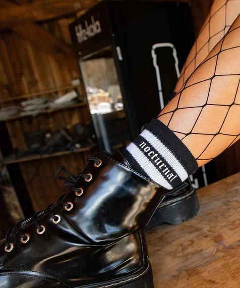

Technostoff
Salta al mundo de la ropa terminada a mano inspirada en la vibrante escena del techno. Nuestro objetivo es enriquecer su estilo de vida mediante la fusión de la atmósfera única de la cultura tecno con streetwear casual. Independientemente de si eres un apasionado visitante del festival, un ávido visitante del club o simplemente un búho nocturno, con nosotros encontrarás los rave Trajes , que combinan perfectamente con tu estilo .
Dance de la gama Premium Hoodie
$ 150.000
Todas nuestras sudaderas con capucha tienen numeración consecutiva en la manga. Así que cada copia es única.
Características:
X
- Sudadera premium negra para mujer y hombre..
- Estampado Techno Flex blanco de alta calidad en la parte delantera.
S
M
L
XL
XXL
TECHNO CALCETINES COLEGIALES EN NEGRO
$ 50.000
Calcetines para raves. La alta proporción de algodón garantiza una comodidad de uso óptima.
Características:
X
- impresión TECHNO de alta calidad en el exterior
- Material: 77 % algodón, 13 % poliéster, 8 % elastano, 2 % nailon.
35
37
38
42
43

Medias de red Rave (perfectas para festivales y discotecas)
$ 80.000
Pequeña
Medio
Grande
Detalles
Nuestras modernas mallas de rejilla
$ 80.000
Camiseta 100% algodón preencogido de 190 gramos.
Características:
X
- Material: 90 % nailon, 10 % elastano
- Tejido tubular.
Pequeña
Medio
Grande
Camiseta Acid Trip con estampado grande en la parte delantera.
$ 90.000
Camiseta 100% algodón preencogido de 190 gramos.
Características:
X
- agradable grosor del tejido de 180 g/m².
- 100 % algodón, jersey sencillo, transpirable.
- Cuello redondo.
S
M
L
XL
XXL
Techno Triangle Sudadera con capucha premium
$ 17.000
Camiseta 100% algodón preencogido de 190 gramos.
Características:
X
- Sudadera premium negra para mujer y hombre.
- Etiqueta Technostoff en el bolsillo canguro delantero.
- 65% algodón, 35% poliéster.
S
M
L
XL
XXL
Camiseta Techno Dot (Blanco o Negro / Mujer)
$ 70.000
Camiseta 100% algodón preencogido de 190 gramos.
Características:
X
- Camiseta con cuello redondo y de lycra.
- Tejido tubular.
- Doble costura en mangas y bajo.
- Refuerzo de hombro a hombro.
S
M
L
XL
XXL
nocturnal Pantalones cortos (unisex)
$ 80.000
El suave algodón hace de esta prenda un imprescindible imprescindible para el verano de 2021.
Características:
X
- Un grosor de tejido de 260 g/m² hace que los pantalones cortos sean agradablemente suaves y cómodos.
- 95 % algodón con 5 % de elastano - rizo elástico.
S
M
L
XL
XXL
Abanicos 'New Techno' en madera lacada
$ 30.000
Esta vez, nuestro abanico de mano "New Techno" estaba hecho de madera resistente y cubierto con algodón. También es más grande que el modelo de plástico anterior con 23 cm cuando está plegado.
X
Riñonera Hardtekk rayada
$ 48.000
Nuestra riñonera Hardtekk con nuestro clásico motivo Scratched Hard Tekk.
Nuestra riñonera ofrece un compartimento en la parte trasera y un amplio compartimento en la parte delantera, que ofrece dos compartimentos interiores más. Perfecto para tu próxima fiesta techno rave o hardtekk.
X
Bolsa de cadera de decaer
$ 46.000
Nuestra riñonera Hardtekk con nuestro clásico motivo Scratched Hard Tekk.
Nuestra riñonera ofrece un compartimento en la parte trasera y un amplio compartimento en la parte delantera, que ofrece dos compartimentos interiores más. Perfecto para tu próxima fiesta techno rave o hardtekk.
X
Riñonera mundial
$ 48.000
Nuestra riñonera Hardtekk con nuestro clásico motivo Scratched Hard Tekk.
Nuestra riñonera ofrece un compartimento en la parte trasera y un amplio compartimento en la parte delantera, que ofrece dos compartimentos interiores más. Perfecto para tu próxima fiesta techno rave o hardtekk.
X